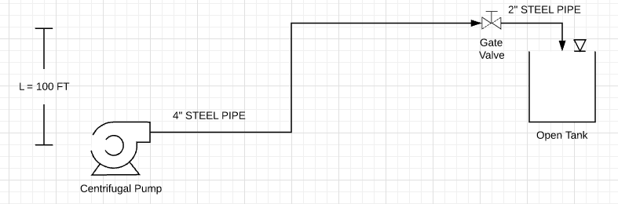

Code Examples and Tutorials¶
Pipe Class Examples¶
The Water.Pipe class allows you to create a pipe object to apply flow calculations. It is useful to start at a pump and create your pipe objects based on pipe size and/or material. You can add fittings to each pipe object and calculate the major and minor losses through the pipe based on flow.
Example #1: Calculating the losses from a pump’s discharge through a pipe network consisting of the following fittings:
- 90 degree elbow, quantity 2
- through-tee, quantity 1
- branch-tee, quantity 1
- gate valve, quantity 1
The pipe is 4-inch schedule 40 steel pipe and 60 ft long.
1 2 3 4 5 6 7 8 9 10 11 12 13 14 15 16 17 18 | from Water import Pipe
# assign the flow you want to analyze in gallons per minute
flow = 300 # gpm
# create the pipe object
pipe_1 = Pipe(length=60, size=4, kind='STEEL', sch=40)
# add fittings to the pipe object
pipe_1.fitting(fitting_type='elbow_90', con_type='standard_threaded', qty=2)
pipe_1.fitting('tee_through', 'standard_threaded', qty=1)
pipe_1.fitting('tee_branch', 'standard_threaded', qty=1)
pipe_1.fitting('valve', 'gate', qty=1)
# apply the get_losses function to compute head loss
losses = pipe_1.get_losses(flow)
print('head loss at {} gpm = {:.2f} ft'.format(flow, losses))
|
>>> output: head loss at 300 gpm = 5.60 ft
You can get a list of fittings in the pipe object by using the Pipe.fitting_info() method.
>>> print(pipe_1.fitting_info())
Fittings list:
elbow_90, standard_threaded: Kvalue = 0.899, qty = 2
tee_through, standard_threaded: Kvalue = 0.225, qty = 1
tee_branch, standard_threaded: Kvalue = 1.124, qty = 1
valve, gate: Kvalue = 0.275, qty = 1
Example #2: Building from example #1, this is an example of finding the Total Dynamic Head for a pipe network consisting of a pump, pipe and fittings, and a tank at an elevated location.
from Water import Pipe
# assign the flow you want to analyze in gallons per minute
flow = 300 # gpm
L = 100 # ft
# create the 2 pipe segments in the pipe network
pipe_1 = Pipe(length=60, size=4, kind='STEEL', sch=40)
pipe_2 = Pipe(length=20, size=2, kind='STEEL', sch=40)
# add fittings to the pipe segments
pipe_1.fitting(fitting_type='elbow_90', con_type='standard_threaded', qty=2)
pipe_1.fitting('tee_through', 'standard_threaded', qty=1)
pipe_1.fitting('tee_branch', 'standard_threaded', qty=1)
pipe_1.fitting('valve', 'gate', qty=1)
pipe_2.fitting('elbow_90', 'standard_threaded', qty=2)
# apply the get_losses function to compute major and minor losses
losses = pipe_1.get_losses(flow) + pipe_2.get_losses(flow)
TDH = L + losses
print('Size Pump for {} gpm at {:.0f} feet of Head'.format(flow, TDH))
>>> output: Size Pump for 300 gpm at 153 feet of Head
Pump Class Examples¶
The Water.Pump class allows you to create a pump class to help in sizing a pump. The Water package includes a database of pumps that you can add to. Once pump data is loaded into the pump object you can plot its pump curve.
Example #1: Load existing pump data into the a pump object and plot it’s curve.
1 2 3 4 5 6 7 8 9 10 11 12 | from Water import Pump
# design parameters
FLOW = 100 # gpm
TDH = 111 # ft head
# define pump object and load pump data
pump_1 = Pump()
pump_1.load_pump('Goulds', '3657 1.5x2 -6: 3SS')
# plot curve without affinitized curves and with efficiency curve
pump_1.plot_curve(target_flow=FLOW, tdh=TDH, vfd=False, eff=True, show=True)
|
Example #2: Load new pump data into database, create a system curve and plot affinitized pump curve with the system curve.
1 2 3 4 5 6 7 8 9 10 11 12 13 14 15 16 17 18 19 20 21 22 23 24 25 26 27 28 29 | import numpy as np
from Water import Pump
# create a pump object
pump_2 = Pump()
# define new pump parameters as a dictionary
new_pump_data = {
'model' : 'BF 1-1/2 x 2 - 10',
'mfg' : 'Goulds',
'flow' : [0, 50, 100, 150, 200, 250],
'head' : [400, 400, 390, 372, 340, 270],
'eff' : [0, 0, 0.49, 0.56, 0.60, 0.54],
'bep' : [200, 340],
'rpm' : 3500,
'impeller' : 9.1875
}
# add pump to database, this will load the parameters into the object variables as well
pump_2.add_pump(**new_pump_data)
# creating a mock system curve
system_flow = np.linspace(1, 220, 20)
system_head = []
for flow in system_flow:
system_head.append(220 + 20*np.exp(-1/(flow*.005)))
# plot curve with system curve
pump_2.plot_curve(system_flow, system_head, show=True)
|
Tank Class Examples¶
You can use the tank class to create tank objects and apply common engineering calculations to them. Common tank properties such as total volume, cross sectional area, and useable volume are automatically calculated once the object is instantiated.
Example #1: Create a tank object with the following parameters.
- height = 45 feet
- diameter = 60 feet
- freeboard = 3 feet
- dead storage = 2 feet
- elevation = 230 feet
1 2 3 4 5 6 7 8 9 10 11 12 13 14 15 16 | from Water import Tank
# create a dictionary for the tank parameters
tank_data = {
'name' : 'Tank 1',
'diameter' : 60,
'height' : 45,
'freeboard' : 3,
'deadstorage' : 2,
'elevation' : 230
}
# instantiate object
tank_1 = Tank(**tank_data)
print(tank_1.vol, 'gallons')
|
output: 951777.695 gallons
You can print out a report of the tank properties using the following
>>> print(tank_1.get_info())Tank 1
Base Elevation:————- 230 ftOrientation:—————- verticalTank Height:—————- 45 ftTank Diameter:————– 60 ftTank cross-sectional area:– 2827.4 ft^2Total volume:————— 951777.7 galEffective volume:———– 846024.6 gal
Example #2:
A shape property can be defined for horizontal tanks to easily calculate water volume. In this example we will graph the volume change as the water level rises in a 10 ft diameter horizontal tank.
1 2 3 4 5 6 7 8 9 10 11 12 13 14 15 16 17 18 19 20 21 22 23 24 25 26 27 28 | from Water import Tank, tools
import matplotlib.pyplot as plt
# create a dictionary for the tank parameters, note we use the 'length' keyword here
tank_data = {
'name' : 'Horizontal Tank',
'diameter' : 10,
'length' : 20,
'freeboard' : 1,
'deadstorage' : 0,
'elevation' : 100,
'shape' : 'horizontal'
}
#instantiate object
horiz_tank = Tank(**tank_data)
vols = []
for level in range(0, horiz_tank.diameter+1):
vols.append(horiz_tank.horizontal_vol(level))
print(vols)
# plot a graph of the volume change while the tank is filling
plt.plot(vols)
plt.title('Volume Change When Tank is Filling')
plt.xlabel('Water Level (ft)')
plt.ylabel('Volume of Water (gallons)')
plt.show()
|
Genset Class Examples¶
The Genset Class enables you to create a genset object and apply various loads to it. Methods within the class can calculate run times and load capacities.
Note: This should be used for getting “in the ballpark” only. Most genset manufacturer’s provide sizing tools to help specify generators.
Example #1: Create a genset object for the folloing loads.
1 - 5 hp pump with 480v 3ph motor for domestic use1 - 7.5 hp pump with 460v 3ph motor for domestic use2 - 25 hp pumps with 460v 3ph motor for fire-flow use200 watts for pump house lighting2 kw for controls, outlets and heater power
1 2 3 4 5 6 7 8 9 10 11 12 13 14 | from Water import Genset
gen = Genset(480, 3, 100)
# adding domestic pumps
gen.add_motor_load(power=5, units='hp', fire=False)
gen.add_motor_load(7.5)
# adding fire flow pumps
gen.add_motor_load(25, fire=True)
gen.add_motor_load(25, fire=True)
# adding lighting other resistive loads
gen.add_resistive_load(200, units='watts')
gen.add_resistive_load(2, units='kw')
|
Bringing it All Together¶
Sizing a pump using the Pipe Class and Pump Class in a Jupyter Notebook